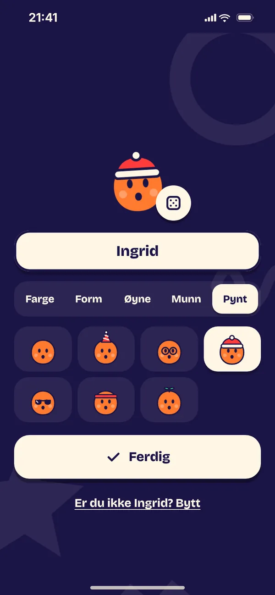

Hjelp og kontakt
Feil, spørsmål, tilbakemeldinger eller ønsker? Skriv til berentsenmedia@gmail.com. Skriv gjerne hvilken telefon du bruker.
Kom i gang
- Trykk Start kvelden og skriv inn gjengen, fra to til 16.
- Velg anledning: Fest, Quiz, Etterfest, Julebord, Hyttetur, Bursdag, eller Velg spill selv.
- Velg hvor lenge kvelden skal vare: 30, 60 eller 90 minutter, eller til taxien kommer.
- Legg telefonen midt på bordet. Regissøren sier hva som skjer, og dere trykker videre.
Svar på hver sin mobil
I quizen, og i noen av spillene i Velg spill selv, kan alle svare på sin egen mobil. Telefonene snakker direkte med hverandre over wifi-en dere er på, uten internett.
Finner ikke mobilen verten? Sjekk dette:
- Alle er på samme wifi, og ingen har VPN på. Eller: alle er koblet til vertens Delt Internett (iPhone) eller mobile tilgangspunkt (Android).
- På iPhone: Lokalt nettverk er slått på for Regissøren under Innstillinger.
- Verten har appen åpen med skjermen på.
- Bli med finner kvelden av seg selv når det bare er en kveld på wifi-en. Er det flere, skann QR-koden på vertens skjerm.
- For å skanne QR-koden trenger appen tilgang til kameraet.

Vanlige spørsmål
Jeg har kjøpt Fullversjon, men den er låst.
Gå til Butikk på forsiden av appen og trykk Gjenopprett kjøp. Bruk samme Apple-ID eller Google-konto som da du kjøpte.
Et kjøp venter på godkjenning.
Kjøp som må godkjennes, for eksempel med Spør om kjøp, låses opp av seg selv når de er godkjent. Appen sier fra med en egen skjerm, men aldri midt i en kveld.
Mobilen finner ikke verten.
Alle må være på samme wifi, uten VPN, eller koblet til vertens delte internett. Verten må ha appen åpen med skjermen på. Se sjekklisten under.
Hva er straffen?
Å klappe i hendene, fra en til fem ganger etter nivået. Hver spiller kan få mini-straffer i stedet, og hele kvelden kan spilles med Bare mini-straffer. Det er alltid lov å stå over.
Hvordan sletter jeg dataene mine?
Alt ligger bare på telefonen. Slett spillere, kort og arkiv under Innstillinger, eller slett appen.
Om appen
Regissøren er laget av Berentsen Media og finnes for iPhone og Android. Appen er laget for voksne over 18 år. Les også personvernerklæringen.